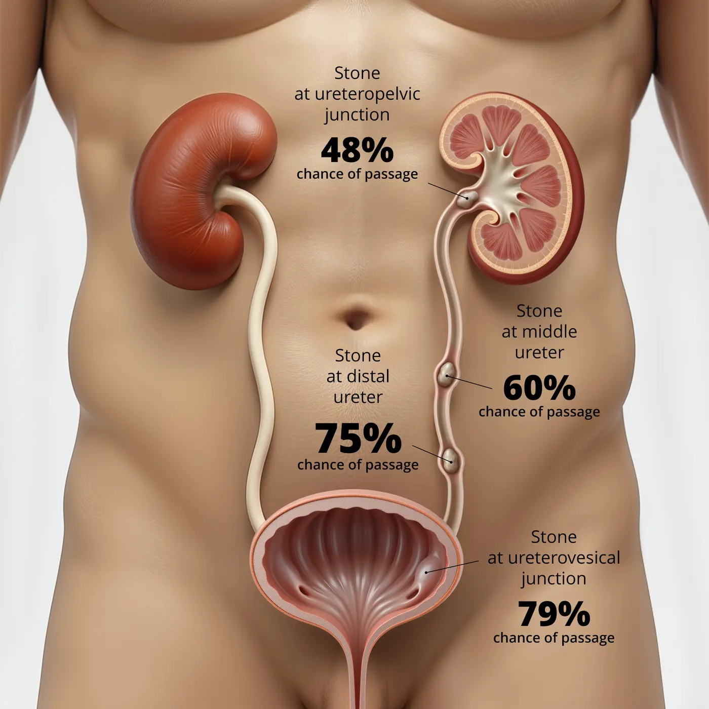
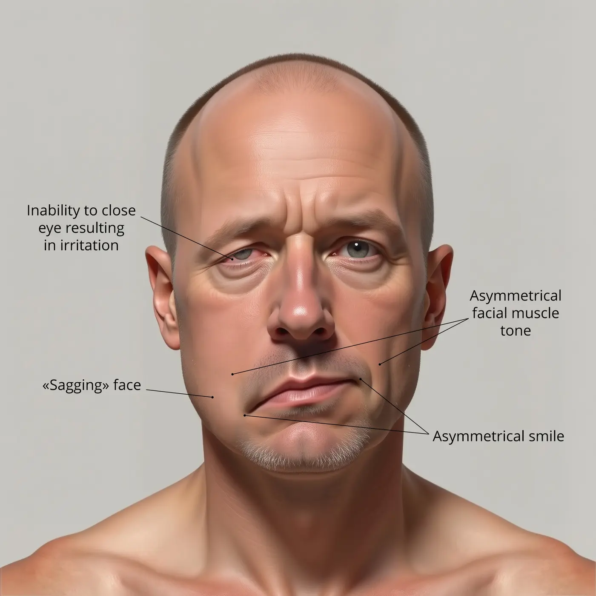

Adaptive medical intelligence / emergency medicine
Stay ahead of medicine. Before the next case.
Every answer becomes signal. MedQ-AI builds a living model of your clinical knowledge—then directs human-validated questions, research, videos, and bedside tools to the gaps that matter.
We believe many diagnostic failures begin with an invisible gap: knowledge that is uncertain, outdated, or weaker than the clinician realizes. MedQ-AI is designed to detect that signal earlier and direct learning toward it.
These population-level estimates frame the problem MedQ-AI is designed to address; they do not establish that any educational product alone prevents a specific outcome.
RESEARCH FEED / PERSONALIZEDKNOWLEDGE PROFILE 291-A
HIGH RELEVANCENEW EVIDENCECONTROVERSIES
01
CRITICAL CARE · 2025 · 96% MATCH
Hemodynamic strategy in refractory shock
Signal: vasopressor sequencing · Your gap: moderate
MD SUMMARY A focused synthesis translates the paper’s methods, result, and bedside implication into a four-minute read.
02
TOXICOLOGY · 93% MATCH
High-risk airway management in salicylate poisoning
03
PEDIATRICS · 88% MATCH
New evidence in infant resuscitation
02 Adaptive media
Your unknowns reorganize the feed.
Not an endless content library. A living evidence wall that changes as your knowledge profile changes.
SHORT · 00:38Infant CPR: the first 30 secondsPEDS / PRIORITY 01

VISUAL BRIEF · 02:10Renal physiology, compressedRENAL / BUILDING
CASE SHORT · 00:51Don’t miss the aortaVASCULAR / DECAY
DECISION MAP · 01:24Choose the narrower weaponID / STRONG
MICRO LESSON · 00:44Mechanism before memoryMICRO / PRIORITY 02

VISUAL DX · 00:36Read the faceNEURO / BUILDING
FIELD BRIEF · 00:57Reversal is only step oneTOX / PRIORITY 03
CASE SIGNAL · 01:05Recognize the toxidromeTOX / HIGH RELEVANCE
FEED REASSEMBLING / TOXICOLOGY WEIGHT +18%
03 The learning architecture
Questions are the sensor. The knowledge profile is the engine.
MedQ-AI converts performance into a continuously updated map, then closes the loop with the right learning intervention.
02 / CLINICAL GOVERNANCE LAYERAI-curated. Human validated by MD clinicians.
Physician oversight is built into the content system—not added as a footnote.
SHIFT MODE / ACTIVE
PIT / BAY 08 · 02:41
04 Field ready
Built for the pit. Not the lecture hall.
Five minutes before shift. Ninety seconds between patients. One question on an Apple Watch. MedQ-AI is designed around the fragmented, high-stakes reality of emergency medicine.
01
Micro-learning under pressure5Q quizzes, streaks, reminders, rapid review
02
Current evidence, compressedTop papers organized, summarized, and explained
03
From learning to bedsideDecision-support tools connected to your gaps
05 Precision deployment
One profile. Four ways to close the gap.
The same knowledge signal orchestrates what you test, read, watch, and use at the bedside.
SHORT-FORM VIDEO / ADAPTIVE
00:42Aortic catastrophe in one minuteWHY THIS / MISSED Q 18
00:38Infant CPR: first movesWHY THIS / DECAY DETECTED
00:49Mechanism before memoryWHY THIS / NEW EVIDENCE
00:42Aortic catastrophe in one minuteWHY THIS / MISSED Q 18
＋↗⋯
Watch the exact concept.
A vertical feed tuned to your active gaps—not generic engagement.
RESEARCH / PUBMED INTELLIGENCE
EVIDENCE ORCHESTRATORPMID / LINKED
PUBMEDLIVE SOURCE
96%PROFILE MATCH
ILLUSTRATIVE MATCH · TOXICOLOGY · 2025
Management strategy for the severely poisoned airway
SIGNALMETHODSBEDSIDECAVEATS
WHY IT FOUND YOU
New evidence intersects with a recently detected acid–base reasoning gap.
CLINICAL TAKEAWAY
Preserve compensatory ventilation and sequence stabilization before definitive airway control.
Research becomes a clinical intelligence brief.
PubMed papers arrive ranked to your profile, summarized, sourced, and human validated.
SIDEKICK / CLINICIAN-ACTIVATED
SIDEKICK ACTIVEMD ACTIVATED · 04:18
VALIDATED RULE DETECTEDHEART Pathway4 / 5 elements recognized
✓ History characterized✓ ECG reviewed✓ Age + risk factors→ Troponin result pending
CLINICAL PROMPTValidated pathway is one element from completion.Surface to clinician →
ENCOUNTER SIGNALKNOWLEDGE PROFILE+ CONTEXT
FUTURE MODULE · ILLUSTRATIVE EXPERIENCE
MEDQ7
1 question before shift?
5DAY STREAK
Let practice refine the profile.
When activated by the physician, SideKick can surface validated decision-rule elements and return structured learning signals. Apple Watch keeps rapid review within reach.
06 Recognition
Built at the intersection of medicine, intelligence, and execution.
MedQ-AI has been recognized by leading entrepreneurship and health-technology programs.